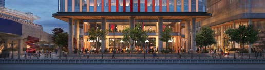
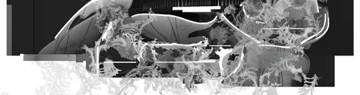

Associate Principal
KPF · London · 2025–present
Interview, onboard and train staff; manage up to five people; client-facing lead on a large masterplan.
Architect and filmmaker. Associate Principal at KPF in London, with 9+ years across architecture, computational design, BIM and digital delivery, generative AI and visual storytelling.

One North Quay Europe's tallest purpose-built commercial lab building. I led the facade package and the BIM team.A 23-story, 823,000 sq ft life-sciences tower at Canary Wharf. After early lab feasibility studies and test fits, I led the roughly 120-sheet terracotta curtain-wall package through RIBA Stage 4 and into construction support, coordinating facade engineers, manufacturers and cost consultants.
As BIM lead for a team of about ten, I coordinated 10–15 consultant models with clash detection in Revizto and built the curved, faceted and adaptive panel families. I also designed the public realm and landscape, and worked with glazing artists on the facade's color gradient.
Image: Kiasm / KPF, with modeling and Photoshop work by me.
 Changi Airport Terminal 5
A terminal for 50 million passengers a year, designed with Heatherwick Studio. I worked on the roof and passenger flows.
Changi Airport Terminal 5
A terminal for 50 million passengers a year, designed with Heatherwick Studio. I worked on the roof and passenger flows.
KPF and Heatherwick Studio's competition-winning design for Changi's fifth terminal, conceived as an extension of the city rather than just a machine for moving people.
I worked on passenger flows and the roof. Its geometry came from hand-placed control points and Grasshopper scripts for structure, glazing panels and drainage, all inside a structural grid that fixed where peaks and valleys could fall. In 2018 I also tested early machine-learning approaches to the roof; they fell short, and the design still rested on judgment across structure, drainage and operations.
Image: [credit].
 99 City Road
A 36-story office tower at Old Street. I led the 250-sheet architectural and facade package.
99 City Road
A 36-story office tower at Old Street. I led the 250-sheet architectural and facade package.
A 475,000 sq ft office tower at the junction of Old Street and the City of London. I led the roughly 250-sheet architectural and facade package through RIBA Stage 4, kept recurring client changes under control through addenda and revision cycles, and handled RFIs, shop drawings, mockups and factory visits.
When annotations drifted across the set, I had an LLM write a Revit script to fix them in bulk, tested it in the live model, then ran it across the package.
Image: [credit].
 A Network of Lines That Intersect
My MArch thesis: a 10-minute Unreal Engine film about a world that knows it was built.
A Network of Lines That Intersect
My MArch thesis: a 10-minute Unreal Engine film about a world that knows it was built.
A world of architectural sets turned inside out and partly inhabited, recombining across an expanded East London site until their juxtapositions generate a fiction of their own. Drawing on Charlie Kaufman and Jorge Luis Borges, the film heightens diegetic disruptions and artificiality to build a subversive narrative, then turns to intimate moments of design: objects that connect you to real materials and to other worlds.
I designed and modeled the world, wrote the script and voiceover, planned the camera, made the sound and edited the film. A 10,000-word written thesis on reflexive worldbuilding accompanies it.
A masterplan on a Bermondsey factory site closed for 30 years, with more than 1,500 homes, 35% of them affordable.
As BIM lead for a team of eight-plus, I co-wrote the BIM execution plan and set the worksharing, model and documentation standards for a development meant to become a digital twin. I built families, ran model audits, coordinated 10–15 consultant models and trained the team.
Image: [credit].
 Platform 16
A million-square-foot office campus shaped by airport height limits. I developed the massing and facades.
Platform 16
A million-square-foot office campus shaped by airport height limits. I developed the massing and facades.
Three office buildings at 440 West Julian Street in downtown San Jose. Two constraints drove the design: height limits from nearby Mineta San José Airport, and very long facades whose scale had to be broken down.
Working with lead designer Richard Kim from feasibility through design development, I developed the massing and facade design, coordinated facade engineers and manufacturers on the panels, and prepared code analyses, egress drawings and parts of the construction documents.
All images are my own modeling and visualization.
A competition-winning proposal to turn the Whitgift Centre and Centrale into mixed-use urban blocks, adding density along streets and spaces shaped by the area's character. Reusing existing site elements cut the carbon footprint and kept some of the neighborhood's identity.
I led parts of the urban design, designed building facades and public spaces, tested the massing through view analysis and directed the visualization.
Rendering: ATchain, with modeling and direction by me.

Museum of Museums A museum that absorbs other museums, drawn from the recursive ornament of Bavarian Rococo churches.A proposal for a disused site in Deptford. Taking its cue from the recursive ornament of Bavarian Rococo churches, the building's forms curve back on themselves to absorb pieces of other buildings, above all other museums.
The drawings are 3D collages built from 2D elements and 3D-printed ones.
A mixed-use development that reconnects downtown Washington by building over the I-395 freeway.
Over six months I developed facade design and drawings and worked with facade engineers and manufacturers through detailed design, within U.S. code, accessibility, fire and facade-performance requirements.
Image: [credit].
[One or two lines on what the film is about.]
KPF's competition-winning proposal to convert the Otto Wagner Spital, a 143-hectare campus of landmark-protected pavilions and parkland, into Central European University's new campus.
I worked on programming and positioning, translating the university's brief and the campus-scale constraints into a development and design strategy.
Image: [credit].
Facade concept and design development for KPF's work at 5M, a mixed-use district in San Francisco's SoMa.
Over six months I coordinated with structural and facade consultants and prepared code analyses, egress and life-safety drawings and parts of the construction documents under California requirements, including Title 24.
Image: [credit].
Visuals for Derek Piotr's absolute grey: procedurally generated forms that respond to experimental music. I developed the visual concept and procedural systems with Derek, then handled animation, camera, lighting, timing to the music, editing and compositing across all 16 minutes.
An experimental community built to help the imagination produce fictions. This Experimental Prototype Community of Tomorrow transmits the idyllic dreams of its users to those living below.
I modeled parts of the imagined environments for Laura Peterson's virtual-reality and web-based work associated with The Overthrow (holymta.info), then helped set up and run the VR portion of the show.
Associate Principal
KPF · London · 2025–present
Interview, onboard and train staff; manage up to five people; client-facing lead on a large masterplan.
Architectural Designer
KPF · London · 2020–2025
Architectural Designer
KPF · New York · 2015–2018
Architectural Intern
KPF · London · 2014
Student Mentor
The Bartlett, UCL · 2019–2020
Visiting Critic
Columbia GSAPP · 2017
KPF Knowledge Catalyst award, Tech Week
Second place, KPF film competition
MArch (RIBA Part 2)
The Bartlett School of Architecture, UCL · 2020
BArch
The University of Texas at Austin · 2015
BA, English
The University of Texas at Austin · 2015 · Dean's List, University Honors
Study abroad
ENSA Paris-Belleville · 2013
Licensed Architect, Texas (TBAE)
2025 · AIA Member
Design and computation
Rhino · Grasshopper · Revit · Rhino.Inside · Dynamo · pyRevit
BIM and delivery
Revizto · Navisworks · ACC · Bluebeam · Ideate · AutoCAD
Film and visual
Unreal Engine · Houdini · 3ds Max · Runway · xfigura · Premiere Pro · After Effects · Photoshop · Illustrator · InDesign
AI
Generative image and video · LLM-assisted Python for Rhino and Revit